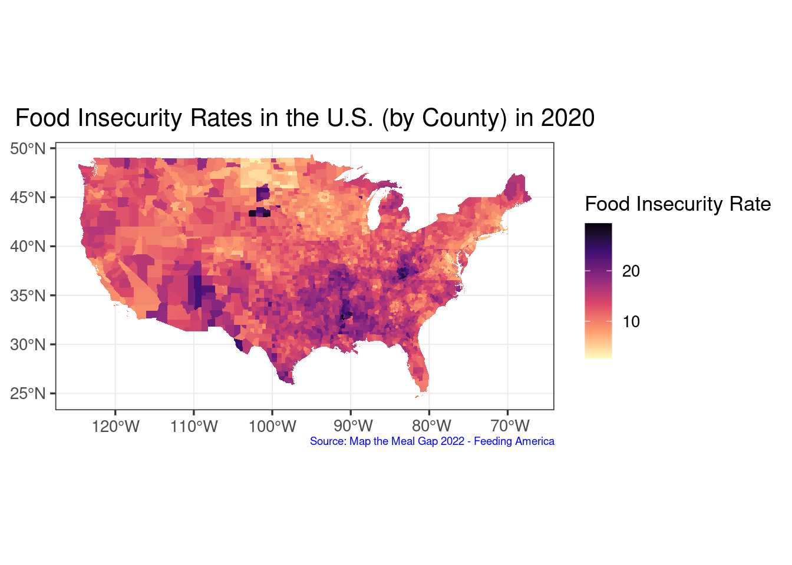
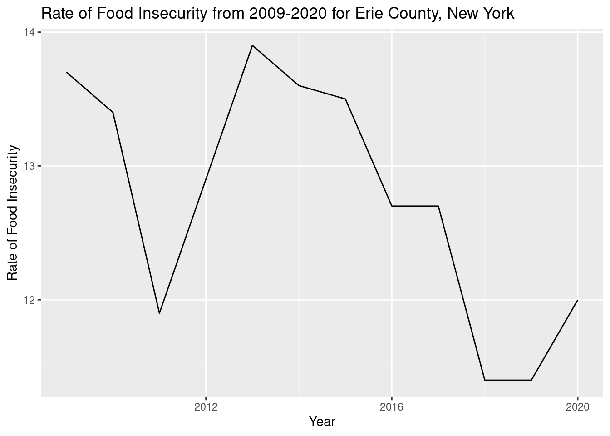

Food Insecurity is a serious issue that affects 10.5% of America as of 2019, according to Silva (2020). Additionally, due to systemic racism, Black and Hispanic Americans are twice as likely to face food insecurity compared to their white counterparts (Silva, 2020). Particularly, for Erie County, Feeding America (2020) states that 12% of residents are food insecure (110,390 individuals). Community efforts to support Buffalo and Erie County residents have taken the form of urban agriculture and community fridges. Besides providing food provisioning, studies have also shown that these efforts have many other social perks such as recreational benefits and a decrease in crime (Hess and Winner, 2007). The goal of this website is to show how these community efforts have improved food security over time. Demographic data will also be looked at. However, there are some limitations to this. There wasn’t information on when each garden was founded, so some have no start dates. The other limitation is these maps right now can only show how food security may have improved and not the other benefits that were previously mentioned. Also, the COVID-19 pandemic did generally worsen food insecurity. Nevertheless, the idea is to show the importance of these community efforts.
How has access to community gardens and fridges improved food security in Buffalo, NY and surrounding areas?
The goal of this website is to make a map that highlights food security from 2009 to 2020 with points on the map where each garden and fridge is, and what year they were put in place. The data sets will be filtered out for Buffalo, NY and surrounding areas. The leaflet package will be utilized to make an interactive map of community garden locations. Data for food insecurity was requested and gathered from Feeding America, and locations of community gardens were requested and gathered from the University at Buffalo’s Food Lab. First, food insecurity rates will be analyzed nationwide. Then food insecurity rates for Buffalo and the surrounding region will be examined for 2009-2020 to highlight the importance of community food provisioning.
library(raster)
library(ggplot2)
library(ggmap)
library(rgdal)
library(rgl)
library(htmltools)
library(tidyverse)
library(leaflet)
library(kableExtra)
library(knitr)
library(dplyr)
library(vctrs)
library(tigris)
library(plotly)
library(maps)
library(tidycensus)
library(viridis)
library(scales)
library(data.table)
library(mapproj)
library(sf)
knitr::opts_chunk$set(cache=TRUE) # cache the results for quick compilingcom_url <- "https://raw.githubusercontent.com/geo511-2022/final_project-LeahBargnesi/master/data/excel.csv"
senior_FS20_demog_url <- "https://raw.githubusercontent.com/geo511-2022/final_project-LeahBargnesi/master/data/State_of_Senior_Housing_Datasets%20(1)/State%20of%20Senior%20Hunger%20in%202020%20Demographic.csv"
FS20_url<- read.csv("https://raw.githubusercontent.com/geo511-2022/final_project-LeahBargnesi/master/data/Map_the_Meal_Gap_Data%20(1)/MMG2022_2020-2019Data_ToShare.csv")
FS19_url<- "https://raw.githubusercontent.com/geo511-2022/final_project-LeahBargnesi/master/data/Map_the_Meal_Gap_Data%20(1)/MMG2021_2019Data_ToShare.csv"
FS18_url<- "https://raw.githubusercontent.com/geo511-2022/final_project-LeahBargnesi/master/data/Map_the_Meal_Gap_Data%20(1)/MMG2020_2018Data_ToShare.csv"
FS17_url<- "https://raw.githubusercontent.com/geo511-2022/final_project-LeahBargnesi/master/data/Map_the_Meal_Gap_Data%20(1)/MMG2019_2017Data_ToShare.csv"
FS16_url<- "https://raw.githubusercontent.com/geo511-2022/final_project-LeahBargnesi/master/data/Map_the_Meal_Gap_Data%20(1)/MMG2018_2016Data_ToShare.csv"
FS15_url<-"https://raw.githubusercontent.com/geo511-2022/final_project-LeahBargnesi/master/data/Map_the_Meal_Gap_Data%20(1)/MMG2017_2015Data_ToShare.csv"
FS14_url<-"https://raw.githubusercontent.com/geo511-2022/final_project-LeahBargnesi/master/data/Map_the_Meal_Gap_Data%20(1)/MMG2016_2014Data_ToShare.csv"
FS13_url<-"https://raw.githubusercontent.com/geo511-2022/final_project-LeahBargnesi/master/data/Map_the_Meal_Gap_Data%20(1)/MMG2015_2013Data_ToShare.csv"
FS12_url<-"https://raw.githubusercontent.com/geo511-2022/final_project-LeahBargnesi/master/data/Map_the_Meal_Gap_Data%20(1)/MMG2014_2012Data_ToShare.csv"
FS11_url<- "https://raw.githubusercontent.com/geo511-2022/final_project-LeahBargnesi/master/data/Map_the_Meal_Gap_Data%20(1)/MMG2013_2011Data_ToShare.csv"
FS10_url<-"https://raw.githubusercontent.com/geo511-2022/final_project-LeahBargnesi/master/data/Map_the_Meal_Gap_Data%20(1)/MMG2012_2010Data_ToShare.csv"
FS09_url<-"https://raw.githubusercontent.com/geo511-2022/final_project-LeahBargnesi/master/data/Map_the_Meal_Gap_Data%20(1)/MMG2011_2009Data_ToShare.csv"To understand the degree of necessity for the implementation of urban agriculture and community fridges, we want to look at an overall map of the most recent food insecurity rates within the United States. With the information provided by this data, we want to compare it to poverty rates in the U.S. to determine whether they are significantly correlated. The data is from Feeding America.
FS20_url<- read.csv("https://raw.githubusercontent.com/geo511-2022/final_project-LeahBargnesi/master/data/Map_the_Meal_Gap_Data%20(1)/MMG2022_2020-2019Data_ToShare.csv")
FS2020_data<- FS20_url %>%
rename(Food_Insecurity = X..of.Food.Insecure.Persons.Overall..1.Year., Food_Insecurity_Rate = Overall.Food.Insecurity.Rate..1.Year., County = County..State)
FS2020 <- subset(FS2020_data, select = c(State, County, Food_Insecurity_Rate, Food_Insecurity))USA <- counties(cb = TRUE)## Retrieving data for the year 2021USA_filter = USA %>%
mutate(FIPS = as.integer(GEOID)) %>%
filter(!STATE_NAME %in% c("Alaska", "Hawaii", "Guam", "Commonwealth of the Northern Mariana Islands", "Puerto Rico", "American Samoa", "United States Virgin Islands"))
US_map = left_join(USA_filter,FS2020_data,by = "FIPS") %>%
mutate(Food_Insecurity_Rate2 = as.numeric(sub("%","",Food_Insecurity_Rate,fixed = T)))
my_breaks <- c(0, 10, 20, 30)
US_map = left_join(USA_filter,FS2020_data,by = "FIPS") %>%
mutate(Food_Insecurity_Rate2 = as.numeric(sub("%","",Food_Insecurity_Rate,fixed = T)))
my_breaks <- c(0, 10, 20, 30)
ggplot() +
geom_sf(data = US_map, color="transparent", size=0, aes(fill=Food_Insecurity_Rate2)) +
labs(title = "Food Insecurity Rates in the U.S. (by County) in 2020",
caption = "Source: Map the Meal Gap 2022 - Feeding America") +
theme_bw(13) +
theme(plot.caption= element_text(size=7,
color="blue",
vjust = 5)) +
theme(plot.title = element_text(hjust = 0.5)) +
scale_fill_gradientn(colours=rev(magma(6)),
name="Food Insecurity Rate",
na.value = "grey100",
breaks = my_breaks, labels = my_breaks)
Based on the choropleth map above, we see that most counties in the United States are experiencing food insecurity between 10-20%. There are some exceptions below 10%, especially in North Dakota. More noticeably, there are a significant number of counties that are facing food insecurity rates beyond 20%, most noticeably in South Dakota and spread throughout the southern portion of the U.S. As seen in the graph, food insecurity clearly threatens a significant portion of the U.S., which opens up the field of urban agriculture and community fridges to decrease some of the food insecurity being experienced.
After examining the food insecurity choropleth map above, we wanted to look at what some of the drivers of food insecurity to see which neighborhoods urban agriculture and community fridges should benefit or be implemented within. One driver we predict to correlate with food insecurity is the percent of those below the poverty line. According to the ASPE, the national 2020 poverty guideline was on average 12,760 dollars for one person in a household and 44,120 dollars for up to eight in one household. While the poverty guideline does vary per state, for this study, these averages will represent the entirety of the U.S. The data is from the United States Census, SAIPE State and County Estimates for 2020.
US_poverty <- read.csv("data/Poverty.csv", skip = 6)%>%
mutate(State.FIPS.Code = as.integer(State.FIPS.Code), County.FIPS.Code = as.integer(County.FIPS.Code) )%>%
mutate(FIPS = paste0(
sprintf("%02d",State.FIPS.Code),
sprintf("%03d", County.FIPS.Code)),
Poverty_Percent=as.numeric(Poverty.Percent..All.Ages))## Warning in mask$eval_all_mutate(quo): NAs introduced by coercion
## Warning in mask$eval_all_mutate(quo): NAs introduced by coercion
## Warning in mask$eval_all_mutate(quo): NAs introduced by coercionUSA_filtered = USA %>%
mutate(FIPS = as.character(GEOID)) %>%
filter(!STATE_NAME %in% c("Alaska", "Hawaii", "Guam", "Commonwealth of the Northern Mariana Islands", "Puerto Rico", "American Samoa", "United States Virgin Islands"))
Poverty_map = left_join(USA_filtered,US_poverty,by = "FIPS")
my_breaks <- c(0, 10, 20, 30)
Poverty_map = left_join(USA_filtered,US_poverty,by = "FIPS")
my_breaks <- c(0, 10, 20, 30)
ggplot() +
geom_sf(data = Poverty_map, color="transparent", size=0, aes(fill=Poverty_Percent)) +
labs(title = "Poverty Rates in the U.S. (by County) in 2020",
caption = "Source: U.S. Census Bureau, Small Area Income
and Poverty Estimates (SAIPE) Program") +
theme_bw(13)+
theme(plot.caption= element_text(size=7,
color="blue",
vjust = 5)) +
theme(plot.title = element_text(hjust = 0.5)) +
scale_fill_gradientn(colours=rev(viridis(6)),
name="Poverty Rate",
na.value = "grey100",
breaks = my_breaks, labels = my_breaks)In this choropleth map, we see a similar trend as the food insecurity choropleth map. Overall, the poverty percent ranges from 5-20%. However, like the food insecurity map, some South Dakota counties appear to face a noticeably higher poverty rate, with over 30%, than other parts of the country. Similarly, the southern section of the U.S. shows between 20-30% poverty rate. Overall, we can see that there is high degree of correlation between poverty rate and percent of food insecurity.
Seeing the visual correlation between the food insecurity and poverty percent choropleth maps, we deemed that it was significant enough to examine through a dot plot. We narrowed down our search to New York State since there are currently multiple initiatives that are combating food scarcity. If there is a noticeable correlation between food insecurity and percent poverty, then this information could be used to further push the implementation and funding for these efforts.
Poverty <- US_poverty %>%
mutate(FIPS = as.integer(FIPS))## Warning in mask$eval_all_mutate(quo): NAs introduced by coercionOverall_map = left_join(Poverty,FS2020_data, by = "FIPS")
Overall2 <- Overall_map %>%
filter(Postal.Code == "NY", Year == "2020") %>%
mutate(Food_Insecurity_Rate2 = as.numeric(sub("%","",Food_Insecurity_Rate,fixed = T)))
Overall2 <- Overall_map %>%
filter(Postal.Code == "NY", Year == "2020") %>%
mutate(Food_Insecurity_Rate2 = as.numeric(sub("%","",Food_Insecurity_Rate,fixed = T)))
#Separating values needed for graphing
Overall3 <- subset(Overall2, select = c(FIPS, Food_Insecurity_Rate2, Poverty_Percent))dot_plot <- ggplot(Overall3, aes(x = Poverty_Percent, y = Food_Insecurity_Rate2)) +
geom_point() +
geom_smooth() +
labs(title = "Poverty Percent vs. Food Insecurity in NYS Counties (2020)", x = "Poverty Percent", y = "Food Insecurity Rate") +
theme_minimal(13) +
theme(plot.title = element_text(hjust = 0.5))
dot_plot## `geom_smooth()` using method = 'loess' and formula = 'y ~ x'In this dot plot, we see a clear correlation between poverty percent and food insecurity. As the poverty percent increases, food insecurity increases linearly as well. With this visualization, it is clear that efforts to reduce food insecurity could aid those who do not surpass the poverty line in New York State.
com_data<- read.csv(com_url) #list of known community gardens/fridges, information on start year is known for some community gardens but not all.
#Data is filtered for Erie County New York and column names are changed for each year's data to match each other. Columns are also changed to character or numeric to match other year's data.
#2020 Food Insecurity for Erie County
FS20_data<- FS20_url%>%
filter(County..State=="Erie County, New York")%>%
mutate(FIPS = as.character(FIPS),Year!=2019,Food.Insecurity.Rate =
as.numeric(sub("%","",Overall.Food.Insecurity.Rate..1.Year.)))%>%
select(FIPS,Year,Food.Insecurity.Rate)
#2019 Food Insecurity for Erie County
FS19_data<- read.csv(FS19_url)%>%
filter(County..State=="Erie County, New York")%>%
mutate(FIPS = as.character(FIPS),Year=2019,Food.Insecurity.Rate =
as.numeric(sub("%","",X2019.Food.Insecurity.Rate)))%>%
select(FIPS,Year,Food.Insecurity.Rate)
#2018 Food Insecurity for Erie County
FS18_data<- read.csv(FS18_url)%>%
filter(X.1 =="Erie County, New York")%>%
mutate(FIPS = as.character(Data.from.MMG.2020.are.NOT.directly.comparable.to.data.from.any.prior.MMG.study.due.to.methodological.changes.made.in.2020.), Year=2018,Food.Insecurity.Rate =
as.numeric(sub("%","",X.2)))%>%
select(FIPS,Year,Food.Insecurity.Rate)
#2017 Food Insecurity for Erie County
FS17_data<- read.csv(FS17_url)%>%
filter(County..State=="Erie County, New York")%>%
mutate(FIPS = as.character(FIPS),Year=2017,Food.Insecurity.Rate =
as.numeric(sub("%","",X2017.Food.Insecurity.Rate)))%>%
select(FIPS,Year,Food.Insecurity.Rate)
#2016 Food Insecurity for Erie County
FS16_data<- read.csv(FS16_url)%>%
filter(County..State=="Erie County, New York")%>%
mutate(FIPS = as.character(FIPS),Year=2016,Food.Insecurity.Rate =
as.numeric(sub("%","",X2016.Food.Insecurity.Rate)))%>%
select(FIPS,Year,Food.Insecurity.Rate)
#2015 Food Insecurity for Erie County
FS15_data<- read.csv(FS15_url)%>%
filter(County..State=="Erie County, New York")%>%
mutate(FIPS = as.character(FIPS),Year=2015,Food.Insecurity.Rate =
as.numeric(sub("%","",X2015.Food.Insecurity.Rate)))%>%
select(FIPS,Year,Food.Insecurity.Rate)
#2014 Food Insecurity for Erie County
FS14_data<- read.csv(FS14_url)%>%
filter(County..State=="Erie County, New York")%>%
mutate(FIPS = as.character(FIPS),Year=2014,Food.Insecurity.Rate =
as.numeric(sub("%","",X2014.Food.Insecurity.Rate)))%>%
select(FIPS,Year,Food.Insecurity.Rate)
#2013 Food Insecurity for Erie County
FS13_data<- read.csv(FS13_url)%>%
filter(County..State=="Erie County, New York")%>%
mutate(FIPS = as.character(FIPS),Year=2013,Food.Insecurity.Rate =
as.numeric(sub("%","",X2013.Food.Insecurity.Rate)))%>%
select(FIPS,Year,Food.Insecurity.Rate)
#2012 Food Insecurity for Erie County
FS12_data<- read.csv(FS12_url)%>%
filter(County..State=="Erie County, New York")%>%
mutate(FIPS = as.character(FIPS),Year=2012,Food.Insecurity.Rate =
as.numeric(sub("%","",X2012.Food.Insecurity.Rate)))%>%
select(FIPS,Year,Food.Insecurity.Rate)
#2011 Food Insecurity for Erie County
FS11_data<- read.csv(FS11_url)%>%
filter(County..State=="Erie County, New York")%>%
mutate(FIPS = as.character(FIPS),Year=2011,Food.Insecurity.Rate =
as.numeric(sub("%","",X2011.Food.Insecurity.Rate)))%>%
select(FIPS,Year,Food.Insecurity.Rate)
#2010 Food Insecurity for Erie County
FS10_data<- read.csv(FS10_url)%>%
filter(County..State=="Erie County, New York")%>%
mutate(FIPS = as.character(FIPS),Year=2010,Food.Insecurity.Rate =
as.numeric(sub("%","",X2010.Food.Insecurity.Rate)))%>%
select(FIPS,Year,Food.Insecurity.Rate)
#2009 Food Insecurity for Erie County
FS09_data<- read.csv(FS09_url)%>%
filter(County.Code=="ERIE", State.Name == "NY")%>%
mutate(FIPS = as.character(FIPS),Year=2009,Food.Insecurity.Rate =
as.numeric(sub("%","",FI.Rate*100)))%>%
select(FIPS,Year,Food.Insecurity.Rate)Food Insecurity data for all years (2009-2020) are joined together in one data frame.
bind_all<- bind_rows(FS20_data, FS19_data, FS18_data, FS17_data, FS16_data, FS15_data, FS14_data, FS13_data, FS12_data, FS11_data, FS10_data, FS09_data)
bind_all[is.na(bind_all) | bind_all=="Inf"] = NAMarkers for Erie County New York represent all known community gardens, urban farms,or fridges. Markers can be clicked on to view name, address, type of food provisioning, and start year if known.
com_data%>%
leaflet(options =
leafletOptions(minZoom = 5, dragging = TRUE))%>%
addProviderTiles(provider = "Esri")%>%
addMarkers(lng = com_data$long, lat = com_data$lat, popup = ~paste0(Name, "<br/>", Type, "<br/>", Address, "<br/>", Start.Year))%>%
setView(lat=42.94991, lng=-78.89927, zoom=11)This graph depicts how food insecurity has changed from 2009-2020.
ggplot(bind_all, aes(Year, Food.Insecurity.Rate))+
geom_line()+
xlab("Year")+
ylab("Rate of Food Insecurity")+
ggtitle(label = "Rate of Food Insecurity from 2009-2020 for Erie County, New York")
lm(formula = Food.Insecurity.Rate~Year, data= bind_all)##
## Call:
## lm(formula = Food.Insecurity.Rate ~ Year, data = bind_all)
##
## Coefficients:
## (Intercept) Year
## 362.7118 -0.1737You can see that food insecurity is on a general decline, though it did spike again in 2020 (height of the COVID-19 pandemic). Yet, food insecurity for 2020 still did not reach the highest recorded food insecurity rate for the years 2009-2020.
Two tables were made, so that you can easily view the amount of community gardens there are in Buffalo, New York. The first table lists all known food provisioning resources, and the second table shows only the food provisioning resources after 2008. This is done so that you can see how the community gardens/fridges that were implemented after 2008 may have impacted food insecurity rates.
kable(com_data)%>% # table of all gardens and fridges
kable_classic("striped", full_width = F)| Type | Name | Address | Start.Year | long | lat |
|---|---|---|---|---|---|
| Fridge | Buffalo Community Fridge | 286 E Ferry, Buffalo, NY | 2020 | -78.85355 | 42.91518 |
| Fridge | Big Herk Fridge | 167 Herkimer St, Buffalo, NY | 2020 | -78.89273 | 42.91749 |
| Fridge | Buffalo Collegiate Love Fridge | 45 Jewett Ave., Buffalo, NY | 2021 | -78.84240 | 42.93392 |
| Fridge | Fridge at Gloria J. Parks Community | 3242 Main St., Buffalo, NY | 2022 | -78.82505 | 42.95262 |
| Urban Farm | 5 Loaves Farm | 1172 West Ave, Buffalo, NY | 2016 | -78.79280 | 42.90764 |
| Urban Farm | WestSide Tilth Farm | 246 Normal Ave, Buffalo, NY | 2017 | -78.88900 | 42.90702 |
| Urban Farm | Common Roots Urban Farm | 309 Peckham St, Buffalo, NY | 2012 | -78.84279 | 42.88760 |
| Urban Farm | Massachusetts Avenue Project | 387 Massachusetts Ave, Buffalo, NY | 1992 | -78.88768 | 42.91286 |
| Urban Farm | African Heritage Food Co-op | 132 Edison Ave Buffalo, NY | 2016 | -78.80231 | 42.92664 |
| Urban Farm | Brewster Street Farm | 119 Jewett Ave, Buffalo, NY | 2012 | -78.83974 | 42.93401 |
| Urban Farm | Flat #12 Mushrooms | 37 Chandler St Buffalo, New York | NA | -78.89020 | 42.94324 |
| Urban Farm | Gro-Operative | 1430 Clinton St Buffalo, NY | NA | -78.82217 | 42.87359 |
| Urban Farm | Groundwork Market Garden | 1698 Genesee St, Buffalo, NY | NA | -78.81818 | 42.91237 |
| Urban Farm | Kubed Root | 33 Pannell St. #1 Buffalo, NY<a0> | NA | -78.83716 | 42.93941 |
| Urban Farm | Michigan-Riley Urban Farm | 108 Riley St, Buffalo, NY | 2011 | -78.86174 | 42.90991 |
| Urban Farm | Urban Fruits & Veggies | Dupont St. and Glenwood Ave. Buffalo, NY | NA | -78.85290 | 42.91247 |
| Urban Farm | Vertical Fresh Farms | 1585 Kenmore Avenue Buffalo, NY | NA | -78.87658 | 42.95895 |
| Urban Farm | Wilson Street Urban Farms | 360 Wilson Street Buffalo, NY | NA | -78.84044 | 42.89512 |
| Urban Farm | Farmer Pirates | 0 Gittere St, Buffalo, NY<a0> | NA | -78.82695 | 42.90164 |
| Community Garden | D’youville Porter | 255 Porter Ave Buffalo | NA | -78.89245 | 42.90083 |
| Community Garden | Dr. Antonia School of Excellence | 125 Hampshire St Buffalo | NA | -78.89611 | 42.91080 |
| Community Garden | Hillery Park | 73 Pawnee Pkwy Buffalo | NA | -78.80934 | 42.86187 |
| Community Garden | Frank Sedita | 21 Lowell Pl Buffalo | NA | -78.88605 | 42.90956 |
| Community Garden | Hariett Ross Tubman | 195 Stanton St Buffalo | NA | -78.84569 | 42.88892 |
| Community Garden | Hariett Ross Tubman | 193 Stanton St Buffalo | NA | -78.84564 | 42.88891 |
| Community Garden | Hariett Ross Tubman | 191 Stanton St Buffalo | NA | -78.84561 | 42.88872 |
| Community Garden | Bennet Park Montesson | 342 Clinton St Buffalo | NA | -78.86195 | 42.88408 |
| Community Garden | Futures Acadamy | 157 Orange St Buffalo | NA | -78.85807 | 42.89914 |
| Community Garden | Futures Acadamy | 155 Orange St Buffalo | NA | -78.85807 | 42.89916 |
| Community Garden | Futures Acadamy | 136 Peach St Buffalo | NA | -78.85768 | 42.89898 |
| Community Garden | Futures Acadamy | 288 Carlton St Buffalo | NA | -78.85829 | 42.89879 |
| Community Garden | Futures Acadamy | 290 Carlton St Buffalo | NA | -78.85816 | 42.89889 |
| Community Garden | Futures Acadamy | 294 Carlton St Buffalo | NA | -78.85813 | 42.89877 |
| Community Garden | Futures Acadamy | 296 Carlton St Buffalo | NA | -78.85799 | 42.89880 |
| Community Garden | Futures Acadamy | 300 Carlton St Buffalo | NA | -78.85790 | 42.89884 |
| Community Garden | Futures Acadamy | 304 Carlton St Buffalo | NA | -78.85772 | 42.89878 |
| Community Garden | Futures Acadamy | 306 Carlton St Buffalo | NA | -78.85760 | 42.89883 |
| Community Garden | Lovejoy Discovery | 157 Gold St Buffalo | NA | -78.80457 | 42.88923 |
| Community Garden | International | 141 Hoyt St Buffalo | NA | -78.88662 | 42.91970 |
| Community Garden | Olmsted | 874 Amherst St Buffalo | NA | -78.87168 | 42.94132 |
| Community Garden | Herman Badillo | 315 Carolina St Buffalo | NA | -78.87799 | 42.89418 |
| Community Garden | Highgate Heights | 600 Highgate Ave Buffalo | NA | -78.80627 | 42.94877 |
| Community Garden | Collegiate Acadamy | 756 St Lawrence Ave Buffalo | NA | -78.84157 | 42.95667 |
| Community Garden | West Hertel Acadamy | 489 Hertel Ave Buffalo | NA | -78.89022 | 42.94569 |
| Community Garden | Waterfront Elementary | 95 4th St Buffalo | NA | -78.88436 | 42.88707 |
| Community Garden | Harvey Austin | 1405 Sycamore St Buffalo | NA | -78.81937 | 42.90354 |
| Community Garden | Acadamy School | 425 South Park Ave Buffalo | NA | -78.86375 | 42.87093 |
| Community Garden | Olmsted | 319 Suffolk St Buffalo | NA | -78.80982 | 42.93132 |
| Community Garden | Pelion Community Garden at City Honors | 206 Best St Buffalo | NA | -78.86067 | 42.90435 |
| Community Garden | Pelion Community Garden at City Honors | 208 Best St Buffalo | NA | -78.86057 | 42.90435 |
| Community Garden | Pelion Community Garden at City Honors | 210 Best St Buffalo | NA | -78.85514 | 42.90390 |
| Community Garden | Pelion Community Garden at City Honors | 212 Best St Buffalo | NA | -78.86028 | 42.90422 |
| Community Garden | Bennet High | 2885 Main St Buffalo | NA | -78.83152 | 42.94344 |
| Community Garden | Lafayette High | 370 Lafayette Ave Buffalo | NA | -78.88488 | 42.92099 |
| Community Garden | East High | 835 Northampton St Buffalo | NA | -78.83567 | 42.90731 |
| Community Garden | East High | 831 Northampton St Buffalo | NA | -78.83597 | 42.90721 |
| Community Garden | Tapestry Charter School | 65 Great Arrow Ave Buffalo | NA | -78.87029 | 42.94264 |
| Community Garden | Universal School | 1957 Genesee St Buffalo | NA | -78.80948 | 42.91386 |
| Community Garden | Westminister Charter School | 24 Westminster Ave Buffalo | NA | -78.81291 | 42.93959 |
| Community Garden | African Community Garden | 52 Arnold St, Buffalo | NA | -78.88835 | 42.91643 |
| Community Garden | Barakah Community Garden | 384 Sweet Ave | 2012 | -78.83379 | 42.90037 |
| Community Garden | Blackrock Heritage Garden | 269 Dearborn St Buffalo | 2012 | -78.90198 | 42.93687 |
| Community Garden | BMHA AD Price ComeUnity Garden | 45 Mortimer St Buffalo | 2012 | -78.85463 | 42.88658 |
| Community Garden | BMHA Marine Drive Apartments | 147 Marine Dr Buffalo | 2014 | -78.88025 | 42.87843 |
| Community Garden | BMHA Mullen Manor | 200 Mineral Springs Buffalo | 2012 | -78.80620 | 42.86068 |
| Community Garden | BMHA Perry | 124 Fulton St Buffalo | 2012 | -78.86650 | 42.87367 |
| Community Garden | BMHA Richmond Summer Senior Center | 337 Summer St Buffalo, NY 14222 | 2014 | -78.88114 | 42.90514 |
| Community Garden | Buffalo Niagara Medical Campus/MOOT Center | 292 High St Buffalo | 2012 | -78.85815 | 42.90060 |
| Community Garden | Calvary Church | 1007 Ellicott St Buffalo | 2012 | -78.86516 | 42.90562 |
| Community Garden | Cazenovia Community Resource Center/SAIL Buffalo | 2 Fuhrmann Blvd Buffalo | 2012 | -78.88313 | 42.87591 |
| Community Garden | Cambridge Avenue Community Garden | 249 Cambridge Ave | NA | -78.82284 | 42.92169 |
| Community Garden | Cottage Garden | 60 York St Buffalo | 2012 | -78.88723 | 42.90434 |
| Community Garden | Edison Community Garden | 132 Edison Avenue | 2019 | -78.80235 | 42.92664 |
| Community Garden | Endeavor Health Services | 1131 Broadway Buffalo | 2019 | -78.83293 | 42.89418 |
| Community Garden | Erie County Youth Detention Center | 810 E Ferry St | 2013 | -78.83560 | 42.91550 |
| Community Garden | Fargo Estate Garden | 272 Jersey St | 2019 | 78.88749 | 42.90177 |
| Community Garden | Farmer’s Garden | 104 Farmer St | NA | -78.90230 | 42.94094 |
| Community Garden | Farmer’s Garden | 108 Farmer St | NA | -78.90213 | 42.94101 |
| Community Garden | First Presbyterian Church Garden | 9 St Johns Pl | NA | -78.88159 | 42.90111 |
| Community Garden | Feedmore WNY Community Garden | 88 Holt St | NA | -78.83070 | 42.88192 |
| Community Garden | Gazebo Park / Fruitbelt Coalition Inc. | 37 Mulberry St | NA | -78.86271 | 42.89457 |
| Community Garden | Garden in the Sun | 382 Fargo Ave Buffalo | NA | -78.89409 | 42.90666 |
| Community Garden | Garden of Stewardship | 59 Timon St Buffalo | 2012 | -78.84983 | 42.90194 |
| Community Garden | Girard Place Garden of Love | 66 Girard Pl Buffalo | 2011 | -78.84044 | 42.90880 |
| Community Garden | Girard Place Garden of Love | 72 Girard Pl Buffalo | NA | -78.84048 | 42.90884 |
| Community Garden | JERS Community Garden | 117 Jewett Ave Buffalo | 2015 | -78.83997 | 42.93395 |
| Community Garden | Greenwood Garden | 97 Greenwood Pl Buffalo | NA | -78.88845 | 42.92301 |
| Community Garden | Greenwood Garden | 99 Greenwood Pl Buffalo | 2012 | -78.88836 | 42.92315 |
| Community Garden | Humber-Grider Community Garden | 852 E Delavan Ave Buffalo | NA | -78.82534 | 42.92284 |
| Community Garden | Hutchinson Block Club | 221 Hutchinson Ave Buffalo | NA | -78.81525 | 42.93806 |
| Community Garden | Brewster Street Farm | 119 Jewett Ave Buffalo | NA | -78.83982 | 42.93400 |
| Community Garden | Jewish Family Services | 70 Barker St Buffalo | NA | -78.87075 | 42.90646 |
| Community Garden | JW / Murphy Memorial Garden | 14 Herman St Buffalo | 2019 | -78.84497 | 42.89250 |
| Community Garden | King Urban Life Center Community Garden | 914 Genesee St Buffalo | NA | -78.84388 | 42.90083 |
| Community Garden | Lincoln Memorial United Church | 17 Florida St Buffalo | NA | -78.85849 | 42.92023 |
| Community Garden | Lombard Clark Block Club | 71 Lombard St Buffalo | 2012 | -78.83679 | 42.88817 |
| Community Garden | Lugar Hermoso de Pedro | 214 West Ave Buffalo | NA | -78.88458 | 42.89856 |
| Community Garden | Lugar Hermoso de Pedro | 278 Hudson St Buffalo | NA | -78.88428 | 42.89881 |
| Community Garden | MAP Youth Garden | 345 Breckenridge St Buffalo | NA | -78.88864 | 42.91672 |
| Community Garden | Maryland Street Community Garden | 259 Maryland St Buffalo | NA | -78.88325 | 42.89642 |
| Community Garden | Mayer Street Community Garden | 93 Mayer Ave Buffalo | 2018 | -78.89927 | 42.94991 |
| Community Garden | Michigan Riley Farm | 108 Riley St Buffalo | NA | -78.86172 | 42.90989 |
| Community Garden | Michigan Street Corridor | 517 Michigan Ave Buffalo | NA | -78.86733 | 42.88660 |
| Community Garden | Michigan Street Corridor | 36 Nash St Buffalo | NA | -78.86667 | 42.88603 |
| Community Garden | Mulberry and Friends | 124 Mulberry St Buffalo | NA | -78.86243 | 42.89703 |
| Community Garden | Mulberry Garden | 220 Jersey St Buffalo | 2012 | -78.88906 | 42.90090 |
| Community Garden | Old First Ward Community Garden | 104 Vincennes St Buffalo | 2012 | -78.86322 | 42.86765 |
| Community Garden | Paderewski Community Garden | 400 Paderewski Dr Buffalo | 2010 | -78.83399 | 42.88997 |
| Community Garden | Potomac Community Garden | 294 Potomac Ave Buffalo | NA | -78.88843 | 42.92450 |
| Community Garden | Prospect Community Garden | 109 Prospect Ave Buffalo | NA | -78.88173 | 42.89257 |
| Community Garden | Putnam Street Community Garden | 83 Putnam St Buffalo | 2013 | -78.88408 | 42.91938 |
| Community Garden | Resurrection Garden | 1609 Genesee St Buffalo, NY | NA | -78.82081 | 42.90980 |
| Community Garden | Riverside Peace Garden | 179 Ontario St Buffalo | 2011 | -78.90337 | 42.94996 |
| Community Garden | Rosa Gibson Garden of Love | 495 Northampton St Buffalo | 2005 | -78.84850 | 42.90735 |
| Community Garden | Rosa Gibson Garden of Love | 493 Northampton St Buffalo | NA | -78.84873 | 42.90742 |
| Community Garden | Rosa Gibson Garden of Love | 499 Northampton St Buffalo | NA | -78.84837 | 42.90731 |
| Community Garden | Rosa Gibson Garden of Love | 501 Northampton St Buffalo | NA | -78.84827 | 42.90730 |
| Community Garden | Seneca Babcock Neighborhood Community Garden | 1179 Seneca St Buffalo | NA | -78.83503 | 42.87065 |
| Community Garden | Serenity Garden | 363 West Ave Buffalo | NA | -78.88759 | 42.90244 |
| Community Garden | Shakespeare Garden | 453 Porter Ave Buffalo | NA | -78.88593 | 42.90250 |
| Community Garden | South Fillmore Block Club | 74 Gibson St Buffalo | NA | -78.83842 | 42.88760 |
| Community Garden | Spirit of Truth | 115 Gold St Buffalo | NA | -78.80469 | 42.88809 |
| Community Garden | Square Community Garden & Farmer’s Market | 1590 Fillmore Ave Buffalo | 2018 | -78.83984 | 42.91722 |
| Community Garden | Square Community Garden & Farmer’s Market | 17 Rickert Ave Buffalo | NA | -78.84027 | 42.91694 |
| Community Garden | Square Community Garden & Farmer’s Market | 19 Rickert Ave Buffalo | NA | -78.84032 | 42.91872 |
| Community Garden | Square Community Garden & Farmer’s Market | 21 Rickert Ave Buffalo | NA | -78.83981 | 42.91710 |
| Community Garden | Trinity Tupper Community Garden | 209 W Tupper St Buffalo | 2012 | -78.87912 | 42.89531 |
| Community Garden | Trinity Tupper Community Garden | 92 Trinity Pl Buffalo | NA | -78.87913 | 42.89540 |
| Community Garden | Tyler Street Community Garden | 73 Tyler St Buffalo | 2012 | -78.82904 | 42.95308 |
| Community Garden | University District Block Club Coalition Garden | 3259 Bailey Ave Buffalo | NA | -78.81339 | 42.94373 |
| Community Garden | Valley Community Garden | 94 Leddy St Buffalo | NA | -78.85114 | 42.86847 |
| Community Garden | Vermont Triangle Community Garden | 395 Vermont St Buffalo | 2011 | -78.88495 | 42.90956 |
| Community Garden | Victoria Avenue Block Club | 195 Victoria Ave Buffalo | 2013 | -78.83189 | 42.93518 |
| Community Garden | We Care Community Gardens | 622 Sycamore St Buffalo | 2005 | -78.84805 | 42.89516 |
| Community Garden | We Care Community Gardens | 623 Sycamore St Buffalo | 2005 | -78.84788 | 42.89475 |
| Community Garden | We Care Community Gardens | 621 Sycamore St Buffalo | 2005 | -78.84807 | 42.89463 |
| Community Garden | We Care Community Gardens | 603 Sycamore St Buffalo | 2005 | -78.84863 | 42.89457 |
| Community Garden | We Care Community Gardens | 601 Sycamore St Buffalo | 2005 | -78.84880 | 42.89442 |
| Community Garden | We Care Community Gardens | 595 Sycamore St Buffalo | 2005 | -78.84899 | 42.89446 |
| Community Garden | West Avenue Community Garden | 635 West Ave Buffalo | NA | -78.89339 | 42.90871 |
| Community Garden | West Avenue Community Garden | 633 West Ave Buffalo | NA | -78.89334 | 42.90876 |
| Community Garden | West Side Community Services | 161 Vermont St Buffalo | NA | -78.89186 | 42.90589 |
| Community Garden | West Utica Garden | 244 W Utica St Buffalo | 2005 | -78.87560 | 42.91150 |
| Community Garden | Winslow Avenue Block Club Memorial Garden | 132 Winslow Ave Buffalo | 2019 | -78.84803 | 42.91337 |
| Community Garden | Winslow Avenue Block Club Memorial Garden | 130 Winslow Ave Buffalo | NA | -78.84793 | 42.91350 |
| Community Garden | Winslow Avenue Block Club Memorial Garden | 136 Winslow Ave Buffalo | NA | -78.84774 | 42.91352 |
| Community Garden | Woltz Community Garden | 94 Woltz Ave Buffalo | NA | -78.83584 | 42.89660 |
| Community Garden | Woltz Community Garden | 96 Woltz Ave Buffalo | NA | -78.83584 | 42.89670 |
#Table of gardens/fridges with start year after 2008 and food insecurity rate
gardens_w_year<- com_data%>%
filter(Start.Year!="NA", Start.Year>2008)%>%
mutate(Year = Start.Year)
table2<- merge(gardens_w_year, bind_all)
final_table <- table2[1:43, ]
final_table[9] <- cell_spec(final_table[[9]], color = "white", bold = T,
background = spec_color(1:43, end = 0.9, option = "D", direction = 1, ))
kbl(final_table, escape = F, align = "c") %>%
kable_classic("striped", full_width = F)| Year | Type | Name | Address | Start.Year | long | lat | FIPS | Food.Insecurity.Rate |
|---|---|---|---|---|---|---|---|---|
| 2010 | Community Garden | Paderewski Community Garden | 400 Paderewski Dr Buffalo | 2010 | -78.83399 | 42.88997 | 36029 | 13.4 |
| 2011 | Community Garden | Riverside Peace Garden | 179 Ontario St Buffalo | 2011 | -78.90337 | 42.94996 | 36029 | 11.9 |
| 2011 | Urban Farm | Michigan-Riley Urban Farm | 108 Riley St, Buffalo, NY | 2011 | -78.86174 | 42.90991 | 36029 | 11.9 |
| 2011 | Community Garden | Vermont Triangle Community Garden | 395 Vermont St Buffalo | 2011 | -78.88495 | 42.90956 | 36029 | 11.9 |
| 2011 | Community Garden | Girard Place Garden of Love | 66 Girard Pl Buffalo | 2011 | -78.84044 | 42.90880 | 36029 | 11.9 |
| 2012 | Urban Farm | Common Roots Urban Farm | 309 Peckham St, Buffalo, NY | 2012 | -78.84279 | 42.88760 | 36029 | 12.9 |
| 2012 | Urban Farm | Brewster Street Farm | 119 Jewett Ave, Buffalo, NY | 2012 | -78.83974 | 42.93401 | 36029 | 12.9 |
| 2012 | Community Garden | Tyler Street Community Garden | 73 Tyler St Buffalo | 2012 | -78.82904 | 42.95308 | 36029 | 12.9 |
| 2012 | Community Garden | Barakah Community Garden | 384 Sweet Ave | 2012 | -78.83379 | 42.90037 | 36029 | 12.9 |
| 2012 | Community Garden | Blackrock Heritage Garden | 269 Dearborn St Buffalo | 2012 | -78.90198 | 42.93687 | 36029 | 12.9 |
| 2012 | Community Garden | BMHA AD Price ComeUnity Garden | 45 Mortimer St Buffalo | 2012 | -78.85463 | 42.88658 | 36029 | 12.9 |
| 2012 | Community Garden | Buffalo Niagara Medical Campus/MOOT Center | 292 High St Buffalo | 2012 | -78.85815 | 42.90060 | 36029 | 12.9 |
| 2012 | Community Garden | BMHA Mullen Manor | 200 Mineral Springs Buffalo | 2012 | -78.80620 | 42.86068 | 36029 | 12.9 |
| 2012 | Community Garden | BMHA Perry | 124 Fulton St Buffalo | 2012 | -78.86650 | 42.87367 | 36029 | 12.9 |
| 2012 | Community Garden | Cottage Garden | 60 York St Buffalo | 2012 | -78.88723 | 42.90434 | 36029 | 12.9 |
| 2012 | Community Garden | Garden of Stewardship | 59 Timon St Buffalo | 2012 | -78.84983 | 42.90194 | 36029 | 12.9 |
| 2012 | Community Garden | Calvary Church | 1007 Ellicott St Buffalo | 2012 | -78.86516 | 42.90562 | 36029 | 12.9 |
| 2012 | Community Garden | Cazenovia Community Resource Center/SAIL Buffalo | 2 Fuhrmann Blvd Buffalo | 2012 | -78.88313 | 42.87591 | 36029 | 12.9 |
| 2012 | Community Garden | Greenwood Garden | 99 Greenwood Pl Buffalo | 2012 | -78.88836 | 42.92315 | 36029 | 12.9 |
| 2012 | Community Garden | Old First Ward Community Garden | 104 Vincennes St Buffalo | 2012 | -78.86322 | 42.86765 | 36029 | 12.9 |
| 2012 | Community Garden | Lombard Clark Block Club | 71 Lombard St Buffalo | 2012 | -78.83679 | 42.88817 | 36029 | 12.9 |
| 2012 | Community Garden | Mulberry Garden | 220 Jersey St Buffalo | 2012 | -78.88906 | 42.90090 | 36029 | 12.9 |
| 2012 | Community Garden | Trinity Tupper Community Garden | 209 W Tupper St Buffalo | 2012 | -78.87912 | 42.89531 | 36029 | 12.9 |
| 2013 | Community Garden | Putnam Street Community Garden | 83 Putnam St Buffalo | 2013 | -78.88408 | 42.91938 | 36029 | 13.9 |
| 2013 | Community Garden | Erie County Youth Detention Center | 810 E Ferry St | 2013 | -78.83560 | 42.91550 | 36029 | 13.9 |
| 2013 | Community Garden | Victoria Avenue Block Club | 195 Victoria Ave Buffalo | 2013 | -78.83189 | 42.93518 | 36029 | 13.9 |
| 2014 | Community Garden | BMHA Richmond Summer Senior Center | 337 Summer St Buffalo, NY 14222 | 2014 | -78.88114 | 42.90514 | 36029 | 13.6 |
| 2014 | Community Garden | BMHA Marine Drive Apartments | 147 Marine Dr Buffalo | 2014 | -78.88025 | 42.87843 | 36029 | 13.6 |
| 2015 | Community Garden | JERS Community Garden | 117 Jewett Ave Buffalo | 2015 | -78.83997 | 42.93395 | 36029 | 13.5 |
| 2016 | Urban Farm | 5 Loaves Farm | 1172 West Ave, Buffalo, NY | 2016 | -78.79280 | 42.90764 | 36029 | 12.7 |
| 2016 | Urban Farm | African Heritage Food Co-op | 132 Edison Ave Buffalo, NY | 2016 | -78.80231 | 42.92664 | 36029 | 12.7 |
| 2017 | Urban Farm | WestSide Tilth Farm | 246 Normal Ave, Buffalo, NY | 2017 | -78.88900 | 42.90702 | 36029 | 12.7 |
| 2018 | Community Garden | Mayer Street Community Garden | 93 Mayer Ave Buffalo | 2018 | -78.89927 | 42.94991 | 36029 | 11.4 |
| 2018 | Community Garden | Square Community Garden & Farmer’s Market | 1590 Fillmore Ave Buffalo | 2018 | -78.83984 | 42.91722 | 36029 | 11.4 |
| 2019 | Community Garden | Edison Community Garden | 132 Edison Avenue | 2019 | -78.80235 | 42.92664 | 36029 | 11.4 |
| 2019 | Community Garden | Edison Community Garden | 132 Edison Avenue | 2019 | -78.80235 | 42.92664 | 36029 | 11.4 |
| 2019 | Community Garden | Fargo Estate Garden | 272 Jersey St | 2019 | 78.88749 | 42.90177 | 36029 | 11.4 |
| 2019 | Community Garden | Fargo Estate Garden | 272 Jersey St | 2019 | 78.88749 | 42.90177 | 36029 | 11.4 |
| 2019 | Community Garden | JW / Murphy Memorial Garden | 14 Herman St Buffalo | 2019 | -78.84497 | 42.89250 | 36029 | 11.4 |
| 2019 | Community Garden | JW / Murphy Memorial Garden | 14 Herman St Buffalo | 2019 | -78.84497 | 42.89250 | 36029 | 11.4 |
| 2019 | Community Garden | Endeavor Health Services | 1131 Broadway Buffalo | 2019 | -78.83293 | 42.89418 | 36029 | 11.4 |
| 2019 | Community Garden | Endeavor Health Services | 1131 Broadway Buffalo | 2019 | -78.83293 | 42.89418 | 36029 | 11.4 |
| 2019 | Community Garden | Winslow Avenue Block Club Memorial Garden | 132 Winslow Ave Buffalo | 2019 | -78.84803 | 42.91337 | 36029 | 11.4 |
Food insecurity is an issue in many regions. There are many factors that influence who will be most affected by food insecurity. One of those factors is individuals that live below the poverty line. Because there are little solutions implemented by the government, many times community efforts make the most impact. The goal of this website was to highlight how the grassroots implementation of community gardens, urban farms, and fridges in Erie County, New York have made an improvement in food insecurity. As, more food provisioning has increased in Erie County there has been a decrease in food insecurity rates. There was a bit of a spike in 2020 which is most likely due to the pandemic in which many people became unemployed or were unable to have access to healthy food due to illness or fear of contracting COVID-19. There also may be other factors that have led to the decrease of food insecurity in Erie County, New York. Nevertheless, we think this can give a general idea about how grassroots actions like community gardens are important and can make a difference for the resilience and sustainability of a community.
Gundersen, C., Strayer, M., Dewey, A., Hake, M., & Engelhard, E. (2022). Map the Meal Gap 2022: An Analysis of County and Congressional District Food Insecurity and County Food Cost in the United States in 2020. Feeding America.
Hess, D., & Winner, L. 2007. Enhancing Justice and Sustainability at the Local Level: Affordable Policies for Urban Governments*. Local Environment, 12(4), 379–395. https://doi.org/10.1080/13549830701412489
Overall (all ages) Hunger & Poverty in the United States | Map the Meal Gap. 2022. Retrieved October 11, 2022, from https://map.feedingamerica.org
Silva, C. 2020, September 27. Food Insecurity In The U.S. By The Numbers. NPR. https://www.npr.org/2020/09/27/912486921/food-insecurity-in-the-u-s-by-the-numbers
Story Map Series. 2022 . https://suny-buffalo.maps.arcgis.com/apps/MapSeries/index.html?appid=7a3b2029ff374ac282a90573776ebffe.
2020 Poverty and Median Household Income Estimates - Counties, States, and National
Source: U.S. Census Bureau, Small Area Income and Poverty Estimates (SAIPE) Program